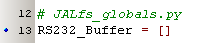
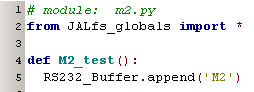
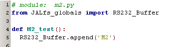
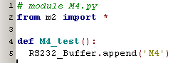
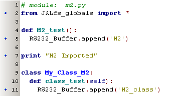

june 2007
Python Imports
Introduction
One of the most difficult subjects in Python is Imports. After working for a few months with Python, I still have the feeling I don't understand it fully. Imports determine for an important part the scope of variables, and as the scope of variables in JAL and Python is completely different, this can make it quit difficult.
For JALfs there is defined a global module (= file), called "JALfs_global.py". In this file globals are defined, which can be used to exchange information between other modules. These modules can communicate with each other, without knowing each others existence, as long as each them include the global module.
A global in the global module is always defined as follows:

The global variable, in order to be fully global and simply to reach, must be defined as a mutually object. Because we always have simple variables, this leads automatically to the list-type. An important fact to notice is that, each time this module is imported, the global variable will be cleared (but maybe that might even depend on the way we perform import). In JALfs we advice an import method, which ensures the execution in the global module is only done once, this method is not an elegant Python way, and is strongly discouraged in Python.
Let's look at a simple module, that wants to add something to a JALfs global variable:

The statement at line 2 is where Python users begin to horror. With this statement it's possible to override almost everything inside Python, but as long as you keep the names of everything defined in JALfs_globals nor Python core names, there's no trouble at all. A more Pythonic way of importing is shown in the picture below, but for our purpose this is almost impossible, because we've to list all our "globals". So it's important to keep the global module as small as possible.

If we import the globals in one of the above ways, we also get these global variables in higher modules. So if we make a module M4, which imports M2, we don't need to explicitly load JALfs_globals in M4:

Don't understand
Sometimes it seems necessary to import the globel again in a class,
but the case below works ok,
so I don't understand this ????
